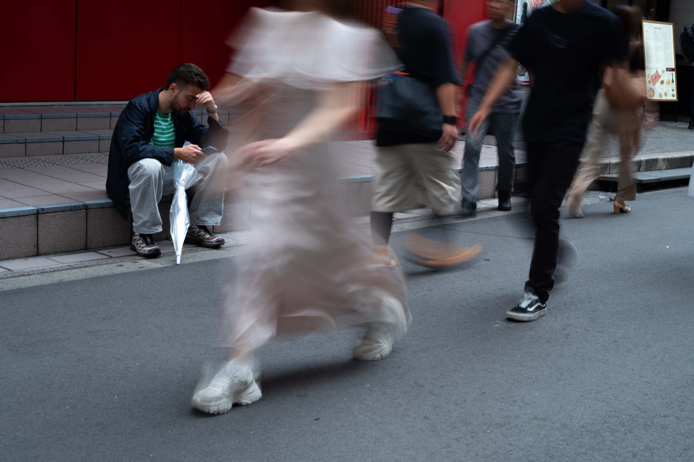

HtoG
Donghun You / Photography
Selected
Projects
Notes
About
Light, shadow and distance
What Remains
After Looking
.
바라본 뒤에 남은 것들.
View photographs

Pain is Longer
Leica M10
Photographs by Donghun You
Selected works